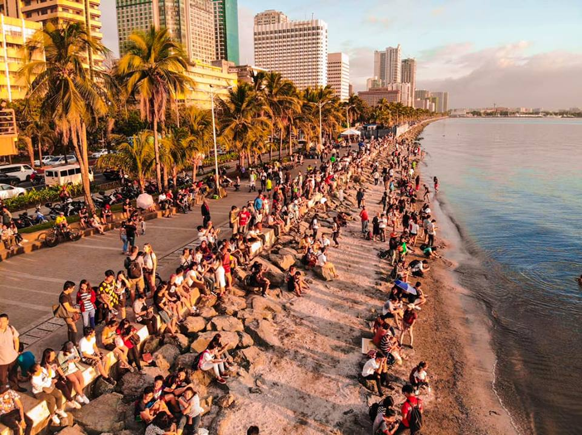

The Manila Bay primary center of shipping, industrial, commercial, fishing, aquaculture, and tourism-related economic activity can be found in the Manila Bay region. The Philippines' Manila Port is served by Manila Bay, a natural harbor. Manila Bay, strategically situated around the Philippines' capital, facilitated trade and commerce between.
Manila Bay is a natural harbor that is one of the most iconic landmarks in the Philippines. Here are some of the things that make Manila Bay special:
Beautiful Scenery: Manila Bay is known for its stunning sunsets, which are considered some of the best in the world. Visitors can take in the picturesque scenery while walking along the baywalk, riding a bicycle, or dining at one of the restaurants or cafes that line the shore.
Historical Significance: Manila Bay has played a significant role in the country's history, from the arrival of the Spanish colonizers in the 16th century to the Battle of Manila Bay in 1898, which marked the end of Spanish colonial rule in the Philippines.
Tourist Attractions: Manila Bay is home to several popular tourist attractions, including the Cultural Center of the Philippines, the Mall of Asia, and the Manila Ocean Park. Visitors can enjoy a range of activities, from watching cultural performances to shopping and dining.
Environmental Importance: Manila Bay is an important ecological site and is home to a diverse range of marine life. Efforts are being made to protect and preserve the bay, including the implementation of a rehabilitation program aimed at improving water quality and restoring the bay's ecosystem.
Accessibility: Manila Bay is easily accessible from the city, with several transportation options available, including taxis, jeepneys, and buses. The bay is also a short walk from several train stations.
Overall, Manila Bay is a special place that offers visitors a range of experiences, from enjoying the beautiful scenery and cultural attractions to learning about the country's history and environmental importance. Its accessibility and diverse offerings make it a must-visit destination for anyone traveling to Manila.